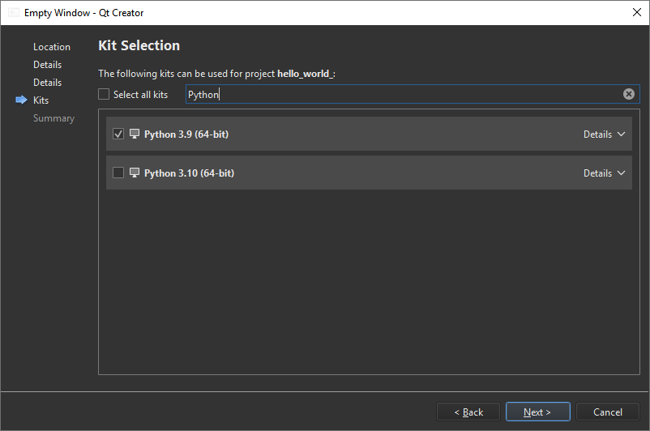

Creating a Qt for Python Application with Qt Quick
First, create a Qt for Python application project. Then, edit the boilerplate code to develop a small application that uses Qt Quick to display the text Hello World in several languages.
For more examples of creating Qt for Python applications, see Qt for Python Examples and Tutorials.
Creating an Empty Project
To create a Qt for Python application that has a main QML file:
- Go to File > New Project.
- Select Application (Qt for Python) > Qt Quick Application - Empty > Choose to open the Project Location dialog.
- In Name, enter the project name. For example, hello_world_quick.
- In Create in, enter the path for the project files. For example,
C:\Examples. - Select Next (on Windows and Linux) or Continue (on macOS) to open the Define Project Details dialog.

- In PySide version, select the PySide version of the generated code.
- Select Next or Continue to open the Kit Selection dialog.

- Select Qt for Python kits for building, deploying, and running the project.
- Review the project settings, and select Finish (on Windows and Linux) or Done (on macOS) to create the project.
The wizard generates the following files:
hello_world_quick.pyproject, which lists the files in the Python project.main.py, which has some boilerplate code.main.qml, which imports Qt Quick controls.reguirements.txt, which stores the PySide version of the generated code.
Adding Qt Quick Imports
The wizard adds the following imports to the main.py source file for access to QGuiApplication and QQmlApplicationEngine:
import sys from pathlib import Path from PySide6.QtGui import QGuiApplication from PySide6.QtQml import QQmlApplicationEngine
Adding a Main Function
The wizard also adds a main function, where it creates a QGuiApplication instance and passes system arguments to the QGuiApplication object:
if __name__ == "__main__":
app = QGuiApplication(sys.argv)
...
Loading the QML File
The following lines in the main class create a QQmlApplicationEngine instance and load the generated QML file to the engine object:
... engine = QQmlApplicationEngine() qml_file = Path(__file__).resolve().parent / "main.qml" engine.load(qml_file) ...
Finally, the wizard adds code that checks whether the file was successfully loaded. If loading the file fails, the application exits with an error code. If loading succeeds, the wizard calls the app.exec() method to enter the Qt main loop and start executing the Qt code:
...
if not engine.rootObjects():
sys.exit(-1)
sys.exit(app.exec())
...
Designing the UI
Open the main.qml file in the Edit mode to design a Qt Quick UI.
Adding Imports
Add imports for Qt Quick Controls and Layouts:
import QtQuick import QtQuick.Window import QtQuick.Controls import QtQuick.Layouts
Adding Properties and Functions
The wizard adds a main window:
Window {
width: 640
height: 480
visible: true
title: qsTr("Hello World")
}
Add a property and function to randomly select the language of the displayed text:
...
readonly property list<string> texts: ["Hallo Welt", "Hei maailma",
"Hola Mundo", "Привет мир"]
function setText() {
var i = Math.round(Math.random() * 3)
text.text = texts[i]
}
Adding Qt Quick Controls
Add Text and Button QML types within a ColumnLayout type to design the UI:
ColumnLayout {
anchors.fill: parent
Text {
id: text
text: "Hello World"
Layout.alignment: Qt.AlignHCenter
}
Button {
text: "Click me"
Layout.alignment: Qt.AlignHCenter
onClicked: setText()
}
}
You can also use Qt Design Studio to design Qt Quick UIs.
Running the Application
Select the  button to run the application.
button to run the application.
See also Creating a Qt for Python Application with Qt Widgets and Develop Qt for Python Applications.